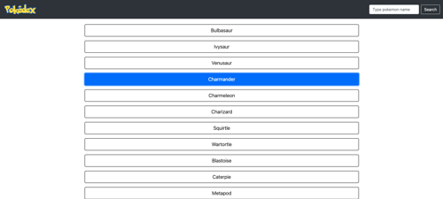

Work
Pokedex App (Javascript)
Within this project, I built a small web application with HTML and JavaScript that loads data from an external API, enabling users to view details of an element item.
Technologies used in this project include: HTML, Polyfill, jQuery, Bootstrap and ESlint. Read further details on GitHub.
myFlix App (server-side)

Within this project, I created a RESTful API for an application called "myFlix" that interacts with a database that stores data about different movies and users.
Technologies used in this project include: Node.js, Express, Passport, MongoDB Atlas, Mongoose, and Postman (for testing). Read further details on GitHub.
myFlix App (client-side - React)
Within this project, I used React to built the client-side for an application called "myFlix" based on its existing server-side code (REST API and database).
Technologies used in this project include: React, Parcel, Axios and React Bootstrap. Read further details on GitHub.
Meet App (PWA)
Within this project, I built a serverless, progressive web application (PWA) with React using a test-driven development (TDD) technique. The application uses the Google Calendar API to fetch upcoming events.
Technologies used in this project include: HTML5, React, AWS Lambda, Jest Cucumber, Lighthouse, and Recharts. Read further details on GitHub.
Chat App (React Native)

Within this project, I built a chat app for mobile devices using React Native. The app provides users with a chat interface and options to share images and their location.
Technologies used in this project include: React, React-Native, Expo, Gifted Chat, Google Firebase, and Android Studio. Read further details on GitHub.
myFlix App (client-side - Angular)

Within this project, I used Angular to rebuilt the client-side for an application called "myFlix" based on its existing server-side code (REST API and database), with supporting documentation.
Technologies used in this project include: Angular, Typescript, Angular Material, and TypeDoc. Read further details on GitHub.